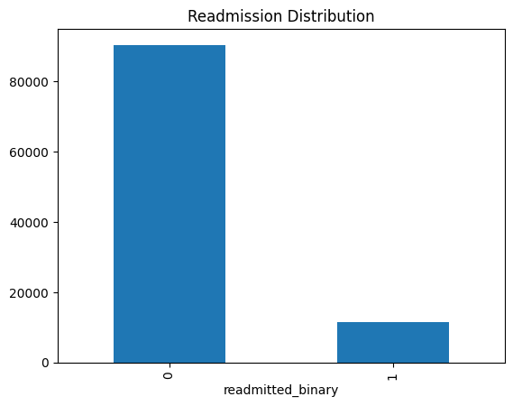
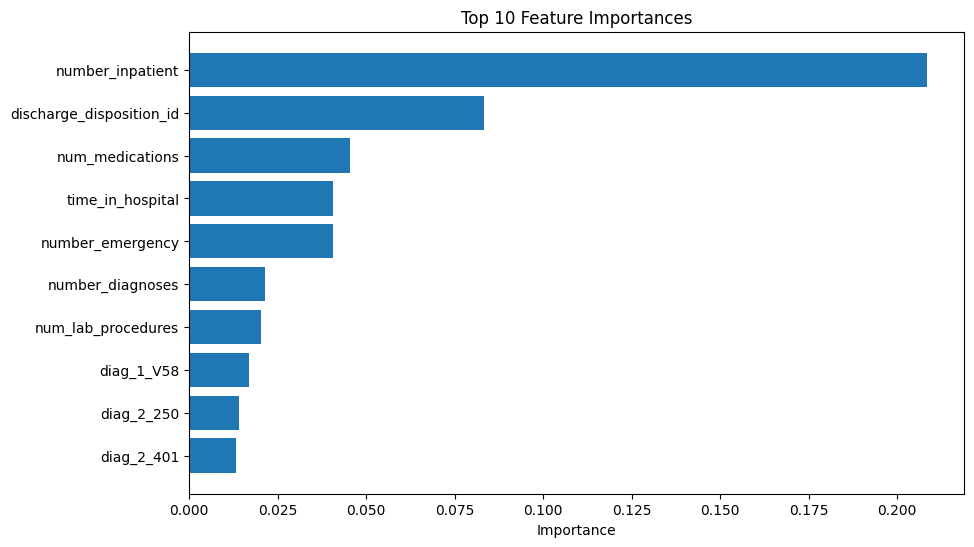

Hospital Readmission Prediction | ISOM 835 - Business Intelligence and Analytics
Hospital readmissions are a significant challenge in healthcare, leading to increased costs and poorer patient outcomes. Identifying patients at risk of readmission can help improve care and reduce unnecessary hospital utilization.
The objective of this project was to build a classification model that predicts whether a patient will be readmitted within 30 days using demographic, clinical, and hospital utilization data.
The dataset used for this analysis was obtained from Kaggle and contains patient-level hospital data related to diabetic patient encounters. It includes demographic information, diagnostic variables, and measures of prior healthcare utilization.
The dataset contains over 100,000 patient records and more than 50 variables. These include demographic, clinical, and utilization-related features such as age, number of medications, time in the hospital, and prior inpatient visits. The original target variable, readmitted, indicates whether a patient was not readmitted, readmitted after 30 days, or readmitted within 30 days.
Exploratory data analysis revealed that patients who were readmitted within 30 days tended to have a higher number of prior inpatient visits and slightly longer hospital stays. The analysis also showed that the dataset was imbalanced, with significantly more patients not readmitted within 30 days than patients who were readmitted.

Before modeling, the dataset was cleaned and prepared to improve accuracy and consistency. Missing values represented as “?” were converted to null values and handled appropriately. Variables with excessive missing data, including weight, payer code, and medical specialty, were removed. Identifier columns such as encounter ID and patient number were also excluded because they do not contribute to prediction. Categorical variables were converted into numerical format using one-hot encoding, and the dataset was split into training and testing sets using an 80/20 split.
Two models were evaluated for this project: Logistic Regression and Random Forest. Logistic Regression was used as a baseline model because it is simple and interpretable, while Random Forest was selected because it can capture more complex relationships in the data and often performs well with structured datasets.
The Random Forest model achieved the strongest overall performance and was selected as the final model. The final model achieved an accuracy of approximately 88.8%. However, class imbalance remained an important limitation, as the model performed much better at identifying patients who were not readmitted than patients who were readmitted within 30 days. Class weighting was applied to improve detection of the minority class.
Feature importance analysis indicated that prior inpatient visits, number of medications, and time spent in the hospital were among the most important predictors of readmission. These findings suggest that patients with higher healthcare utilization and more complex care needs are at greater risk of returning to the hospital within 30 days.

To view the full technical workflow, including data cleaning, model training, and evaluation in Google Colab, use the link below.
View Full Technical ReportThis project developed predictive models to identify patients at risk of hospital readmission within 30 days. Among the models tested, Random Forest performed best and was selected as the final model. The analysis showed that previous inpatient utilization, medication count, and length of stay were important predictors of readmission risk.
Hospitals can use this model to identify higher-risk patients and support earlier interventions aimed at reducing readmissions. At the same time, the model is limited by class imbalance and missing data, which may affect predictive performance. Future improvements could include additional clinical variables and more advanced methods for handling imbalanced data.